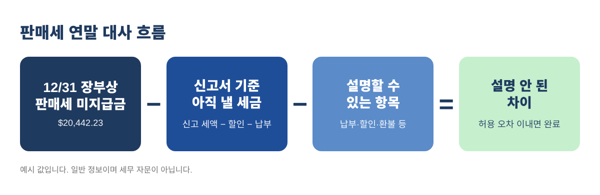
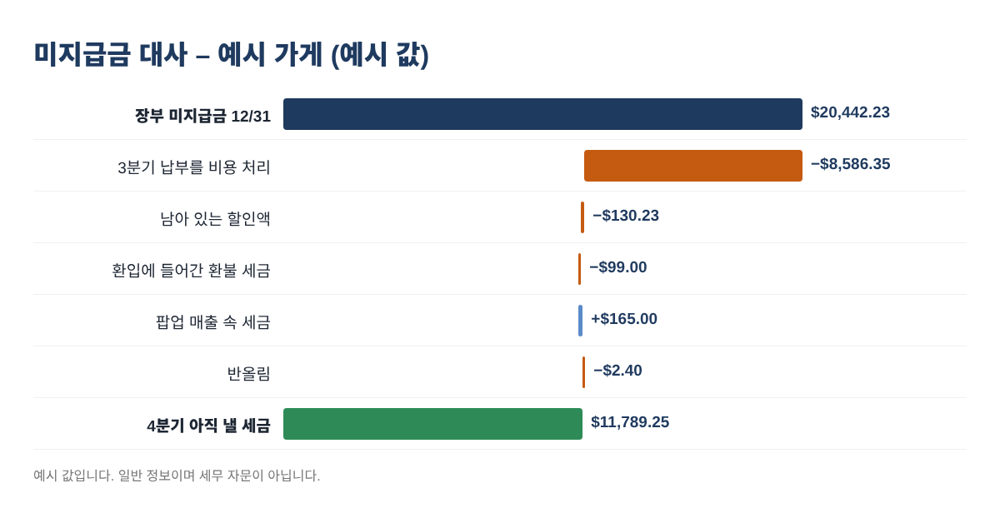
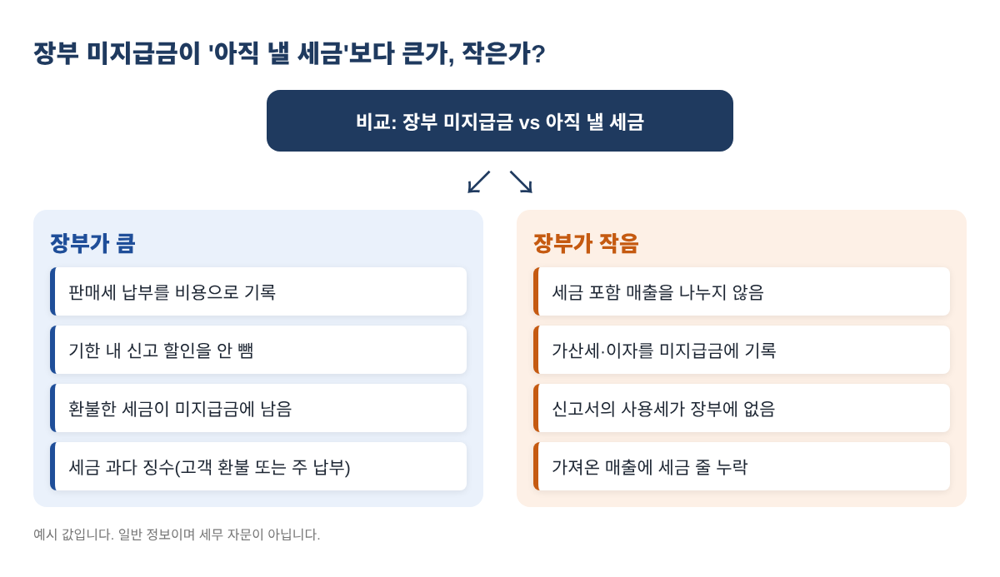

판매세 미지급금이 신고서와 안 맞을 때: 2026년 연말 대사 4단계
2026년 12월 31일, 한 뷰티 서플라이 가게의 대차대조표에는 판매세 미지급금(Sales Tax Payable)이 $20,442.23 잡혀 있습니다. 그런데 아직 내지 않은 신고서는 1월에 제출할 4분기분 하나뿐이고, 그 금액은 $11,789.25입니다. 나머지 $8,652.98는 왜 남아 있는지 아무도 설명하지 못합니다. 이 가게는 이 글을 위해 만든 가상의 예시지만, 판매세를 받는 가게라면 한 해 동안 작은 기록 습관이 쌓여 이런 차이가 생기는 일이 흔합니다.
이 글에서는 연말에 이 차이를 정리하는 순서를 따라가 봅니다. 잔액이 원래 얼마여야 하는지, 어느 분기에서 틀어졌는지 찾는 법, 차이마다 분개로 바꾸는 법, 그리고 마감 전에 비교할 매출 숫자 세 가지입니다.
이 글은 일반 정보이며 세무·법률 자문이 아닙니다. 판매세 규정은 주마다 다르므로 본인 상황은 주 세무 당국이나 전문가와 확인하세요.
12월 31일의 판매세 미지급금은 얼마여야 맞을까?
손님에게 받은 판매세는 주(state)를 대신해 잠시 맡아 두는 돈입니다. IRS Publication 334는 구매자에게 부과되는 주·지방 판매세를 "소득이 아닌 항목"으로 들고, 사업체가 받아서 정부에 넘기는 경우 일반적으로 소득에 넣지 않는다고 설명합니다. 그래서 장부에서는 이 세금을 매출이 아니라 부채(미지급금)로 잡고, 주에 낼 때만 부채가 줄어듭니다.
따라서 연말 잔액에는 원칙적으로 한 가지만 남아야 합니다. 신고했거나 곧 신고할, 아직 내지 않은 기간의 세금입니다. 분기 신고라면 보통 4분기분, 월 신고라면 12월분입니다. 그 밖의 금액은 모두 이유를 찾아야 하는 차이입니다. 식으로 쓰면 다음과 같습니다.
설명 안 된 차이 = 12/31 장부 미지급금 − 남아 있는 전년도 세금 − (2026년 신고 세액 − 할인액 − 2026년분 납부액) − 설명된 항목

1단계: 장부·신고서·납부액을 월별로 나란히 놓기
회계 프로그램에서 2026년 1월 1일–12월 31일 기간으로 보고서 두 개를 뽑습니다. 월별 매출 요약(총매출, 비과세 매출)과 판매세 미지급금 계정 상세 내역(징수 세액은 대변, 납부는 차변)입니다. 그리고 2026년 판매세 신고서와 납부 확인서를 모두 모읍니다. 한 달에 한 줄씩, 다음 항목을 채웁니다.
- 장부: 총매출, 비과세 매출(재판매·면세·타주 배송), 과세 매출, 징수 세액
- 신고서: 총매출, 과세 매출, 신고 세액, 신고서에서 받은 할인·공제. 분기 신고는 분기 마지막 달 줄에, 연간 신고는 12월 줄에 넣습니다.
- 은행 또는 주 납부 내역: 2026년 중에 2026년분으로 실제 낸 세금
회계 기준은 주 신고서와 같아야 합니다. 신고서는 현금 수령 기준인데 장부는 발생주의라면 월별 숫자는 대개 맞지 않고, 그 차이는 오류가 아니라 시기 차이입니다. 엑셀이나 구글 시트에서 B열이 장부 총매출, C열이 비과세 매출이면 과세 매출은 =B2-C2입니다. 장부상 실효세율 확인 칸 =E2/D2도 하나 두세요. 우리 가게 합산 세율과 크게 다른 달이 가장 먼저 볼 곳입니다.
2단계: 차이가 어느 분기에 있는지 찾기
분기 신고자라면 월별 비교는 들쭉날쭉하므로 분기로 묶어 신고서와 비교합니다. E열이 징수 세액, H열이 신고 세액이면 1분기 세액 차이는 =SUM(E2:E4)-SUM(H2:H4)입니다. 예시 가게의 결과는 이렇습니다.
| 분기 | 과세 매출(장부) | 과세 매출(신고서) | 세액(장부) | 세액(신고서) | 세액 차이 |
|---|---|---|---|---|---|
| 1분기 | $103,300.00 | $103,300.00 | $8,522.25 | $8,522.25 | $0.00 |
| 2분기 | $107,701.00 | $107,800.00 | $8,992.50 | $8,893.50 | $99.00 |
| 3분기 | $104,600.00 | $104,600.00 | $8,631.90 | $8,629.50 | $2.40 |
| 4분기 | $143,065.00 | $142,900.00 | $11,624.25 | $11,789.25 | ($165.00) |
| 연간 | $458,666.00 | $458,600.00 | $37,770.90 | $37,834.50 | ($63.60) |
차이는 짝으로 읽습니다. 2분기는 장부의 과세 매출이 $99.00 적고 세액은 $99.00 많습니다. 5월에 $1,200어치 물건과 세금 $99.00을 환불하면서 전액을 매출 환입(Sales Returns)으로 처리해, 신고서에서는 세금을 뺐는데 장부 미지급금에서는 빠지지 않은 것입니다. 4분기는 반대입니다. 연말 팝업 행사 매출 $2,165를 세금 포함 금액 그대로 매출로 잡아 세금 $165.00이 매출 안에 들어가 있습니다. 3분기 $2.40은 계산대 반올림입니다. 연간 세액 차이는 $63.60뿐인데 미지급금은 $8,652.98나 어긋나 있으니, 큰 문제는 매출 쪽이 아니라 납부 쪽에 있다는 뜻입니다.
3단계: 납부액부터 맞추고, 남은 차이에 이름 붙이기
판매세 미지급금 계정의 차변(납부) 기록을 주가 실제로 받은 납부액과 대조합니다. 예시 가게는 1분기($8,479.64)와 2분기($8,849.03)는 미지급금으로 냈지만, 3분기 납부액 $8,586.35는 세금·공과(Taxes & Licenses) 비용으로 기록했습니다. 이 한 건이 차이의 대부분이고, 같은 금액만큼 비용도 부풀려져 있습니다.
두 번째 납부 쪽 항목은 작아서 놓치기 쉽습니다. 이 가게가 있는 주는 기한 내 신고·납부 시 0.5% 할인을 줍니다(예: 텍사스는 기한 내 신고 할인 0.5%와 별도의 선납 할인 1.25%를 두고 있고, 할인이 전혀 없는 주도 많습니다). 1–3분기 할인액 합계 $130.23만큼 덜 냈지만, 그 금액을 미지급금에서 빼는 분개는 없었습니다.
| 항목 | 금액 |
|---|---|
| 장부상 판매세 미지급금(2026/12/31) | $20,442.23 |
| 1–4분기 신고 세액 | $37,834.50 |
| 차감: 1–3분기 신고서 할인액 | ($130.23) |
| 차감: 2026년에 낸 1–3분기 세금 | ($25,915.02) |
| 신고서 기준 아직 낼 세금(4분기, 2027년 1월 납부) | $11,789.25 |
| 항목 반영 전 차이 | $8,652.98 |
| 3분기 납부를 비용으로 기록(장부가 큼) | $8,586.35 |
| 기한 내 신고 할인액이 미지급금에 남음(장부가 큼) | $130.23 |
| 5월 환불 세금을 매출 환입으로 처리(장부가 큼) | $99.00 |
| 12월 세금 포함 팝업 매출(장부가 작음) | ($165.00) |
| 설명 안 된 차이 | $2.40 |

스프레드시트에서 부호가 헷갈리지 않게 하려면 항목마다 "장부가 큼" 또는 "장부가 작음"을 적고 수식으로 부호를 붙입니다. B2가 금액, C2가 구분이면 =IF(C2="장부가 큼",B2,-B2)입니다. 이 열의 합계를 '항목 반영 전 차이'에서 빼면 됩니다.
분개와 각각의 판단 포인트
| 항목 | 차변 | 대변 | 금액 |
|---|---|---|---|
| 3분기 납부를 비용으로 기록 | 판매세 미지급금 | 세금·공과 | $8,586.35 |
| 할인액이 남음 | 판매세 미지급금 | 기타 수익 | $130.23 |
| 환불 세금이 매출 환입에 들어감 | 판매세 미지급금 | 매출 환입 | $99.00 |
| 팝업 매출 안의 세금 | 매출 | 판매세 미지급금 | $165.00 |
네 분개를 반영하면 미지급금은 $11,791.65가 됩니다. 4분기 세금에 반올림 $2.40이 더해진 금액입니다. 몇 달러 수준의 반올림은 빠진 거래가 아니라는 것을 확인한 뒤 소액 비용·수익 계정으로 정리하는 경우가 많습니다. 허용 오차는 결과를 보기 전에 미리 정해 두세요.
자주 나오지만 분개 한 줄로 끝내면 안 되는 항목도 세 가지 있습니다.
- 세금을 더 받은 경우. 계산대가 내야 할 세금보다 더 받았다면 그 초과분은 일반적으로 수익으로 옮길 돈이 아닙니다. 예를 들어 캘리포니아 Regulation 1700은 초과 징수한 세금을 고객에게 돌려주거나 주에 내야 한다고 정합니다. 둘 중 하나를 할 때까지 미지급금에 그대로 두고, 해당 주 규정을 확인하세요.
- 가산세와 이자. 늦게 내면서 가산세가 포함된 금액 전체를 미지급금 차변에 넣으면 미지급금이 너무 작아집니다. 가산세·이자는 별도 비용 계정으로 옮겨 미지급금에는 세금만 남깁니다.
- 사용세(use tax). 판매세 없이 산 물건의 사용세가 신고서에 들어가 있다면 미지급금에도 들어가야 합니다. 차변은 구입한 비용이나 자산입니다.

4단계: 마감 전에 매출 숫자 세 개 비교하기
미지급금은 절반일 뿐입니다. 캘리포니아 세무 당국의 감사 안내서(CDTFA Publication 76)는 감사관이 장부의 총매출을 소득세 신고서·판매세 신고서의 매출과 비교하고, 징수한 세금을 신고한 세금과 비교한다고 설명합니다. 이 비교를 먼저 해 두면 좋습니다.
- 장부 vs 판매세 신고서. 예시 가게의 장부 총매출은 $508,866.00, 신고서는 $508,800.00입니다. $66.00 차이는 팝업 매출 속 세금 $165.00에서 매출 환입 속 세금 $99.00을 뺀 금액이고, 위 분개를 하면 사라집니다.
- 장부 vs 소득세 신고서. 소득세 신고서의 총수입은 수정된 장부에서 출발해야 합니다. 소득세 쪽 숫자가 장부보다 징수 세액 정도만큼 크다면 판매세가 총수입에 섞여 들어갔을 수 있습니다.
- 징수 세액 vs 신고 세액. 표 1의 연간 합계, 분개 전 $37,770.90 대 $37,834.50입니다.
두 번째 비교에서 중요한 기준은 IRS Publication 334에 있습니다. 구매자에게 부과되어 사업체가 받아서 내는 세금은 일반적으로 총수입에서 빼고, 판매자 자신에게 부과되는 세금이라면 총수입에 포함합니다. 우리 주의 판매세가 어느 쪽인지는 주 법의 문제이므로, 매출 신고 방식을 바꾸기 전에 확인하세요.
그래도 차이가 남는다면 먼저 볼 다섯 군데
납부와 매출을 확인한 뒤에도 허용 오차를 넘는다면 다음 경우가 원인인 때가 많습니다.
- 주·지역 계정이 여러 개. 주 계정마다 따로 대사합니다. 많은 주에서 시·지역(district) 세금은 같은 주 신고서에 들어가지만, 따로 신고해야 하는 시·카운티도 있으니 해당 주 방식을 확인하세요.
- 마켓플레이스 판매. 마켓플레이스가 세금을 대신 걷어 내는 경우 그 세금은 내 미지급금에 있으면 안 됩니다. 매출을 가져올 때 세금 줄이 함께 들어왔는지 확인하세요.
- 해를 넘긴 환불. 12월 판매를 1월에 환불하면 1월 기간에 반영하는 경우가 많지만 주마다 다릅니다. 해당 주 방식을 확인하고, 장부와 신고서가 같은 기간에 넣었는지 확인합니다.
- 수정 신고와 통지서. 신고서를 수정했거나 주가 조정했다면 수정된 금액을 쓰고, 변경분을 별도 항목으로 적습니다.
- 전년도 잔액. 2026년 1월 1일 미지급금이 미납된 2025년 12월분(또는 4분기분)과 같지 않았다면 지금 차이의 일부는 오래된 것입니다. 기초 잔액부터 맞추세요.
대사표·신고서·납부 확인서는 그해 기록과 함께 보관합니다. 예를 들어 CDTFA는 서면 허가가 없으면 필요한 기록을 최소 4년 보관하고, 감사 중에는 감사가 끝날 때까지 보관하라고 안내합니다. 주마다 기간은 다를 수 있습니다.
위 과정을 그대로 해 주는 판매세 연말 대사 워크북 2026은 아래 무료 키트 다운로드에서 가입 없이 무료로 받으실 수 있습니다(엑셀 + PDF 가이드).
면책 안내: 이 글은 일반적인 교육 목적의 정보이며 세무·법률·회계 자문이 아닙니다. 판매세 규정은 주와 지역마다 다르고, 올바른 처리는 각자의 사실관계에 따라 달라집니다. 글에 나온 가게와 숫자는 모두 가상의 예시입니다. 신고·수정 신고를 하거나 판매세 기록 방식을 바꾸기 전에 주 세무 당국이나 공인 세무 전문가와 본인 상황을 확인하세요.
출처
- IRS Publication 334 (2025), Tax Guide for Small Business – Items That Are Not Income / Sales tax collected / Taxes (확인일 2026-11-27)
- CDTFA Regulation 1700 – Reimbursement for Sales Tax, (b) Excess Tax Reimbursement (확인일 2026-11-27)
- CDTFA Publication 76, Audits (확인일 2026-11-27)
- Texas Comptroller, Sales and Use Tax FAQ – Reporting and Paying (확인일 2026-11-27)
무료 키트 다운로드
글에서 설명한 내용을 그대로 따라 할 수 있는 도구입니다. 가입 없이 바로 받으세요.
- Excel 계산 도구 (.xlsx)Sales_Tax_Reconciliation_2026_EN_KR.xlsx · 21 KB
- 단계별 가이드 (PDF)Sales_Tax_Reconciliation_Guide_2026_EN_KR.pdf · 379 KB
본인과 본인 사업에 무료로 쓰세요. 재판매·재배포는 하지 마세요. 일반 정보이며 세무·법률·회계 자문이 아닙니다. 숫자는 본인 자료로 꼭 확인하세요.